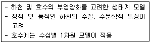
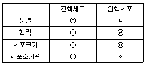
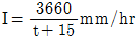
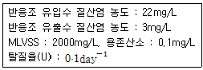
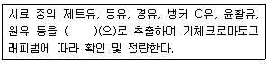
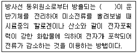
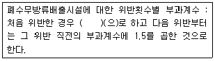

수질환경기사 (2015-08-16 기출문제)
1과목: 수질오염개론
1. 3g의 아세트산(CH3COOH)을 증류수에 녹여 1L로 하였다. 이 용액의 수소이온 농도는? (단, 이온화 상수값은 1.75×10-5이다.)
- 6.3×10-4 mol/L
- 6.3×10-5 mol/L
- 9.3×10-4 mol/L
- 9.3×10-5 mol/L
(정답률: 71%)

2. 성층현상에 관한 설명으로 틀린 것은?
- 수심에 따른 온도변화로 발생되는 물의 밀도차에 의해 발생된다.
- 봄, 가을에는 저수지의 수직혼합이 활발하여 분명한 층의 구별이 없어진다.
- 여름에는 수심에 다른 연직온도경사와 산소구배는 반대모양을 나타내는 것이 특징이다.
- 겨울과 여름에는 수직운동이 없어 정체현상이 생기며 수심에 따라 온도와 용존산소농도 차이가 크다.
(정답률: 86%)
3. 아래와 같은 특징을 나타내는 하천 모델은?

- WASP
- DO-Sag
- QUAL-Ⅰ
- WQRRS
(정답률: 76%)
4. 25℃, 2atm의 압력에 있는 메탄가스 5.0kg을 저장하는데 필요한 탱크의 부피는? (단, 이상기체의 법칙 적용, R = 0.082 Lㆍatm/molㆍK)
- 약 3.8m3
- 약 5.3m3
- 약 7.6m3
- 약 9.2m3
(정답률: 71%)
5. 하수가 유입된 하천의 자정작용을 하천 유하거리에 따라 분해지대, 활발한 분해지대, 회복지대, 정수지대의 4단계로 분류하여 나타내는 경우, 회복지대의 특성으로 틀린 것은?
- 세균수가 감소한다.
- 발생된 암모니아성 질소가 질산화된다.
- 용존산소의 농도가 포화될 정도로 증가한다.
- 규조류가 사라지고 윤충류, 갑각류도 감소한다.
(정답률: 69%)
6. 크기가 2000m3인 탱크 내 염소이온 농도가 250mg/L이다. 탱크내의 물은 완전혼합이며, 염소이온이 없는 물이 20m3/hr로 연속적으로 유입되어 염소이온 농도가 2.5mg/L로 낮아질 때까지의 소요시간(hr)은?
- 약 310
- 약 360
- 약 410
- 약 460
(정답률: 56%)
7. 금속을 통해 흐르는 전류의 특성으로 틀린 것은?
- 금속의 화학적 성질은 변하지 않는다.
- 전류는 전자에 의해 운반된다.
- 온도의 상승은 저항을 증가시킨다.
- 대체로 전기저항이 용액의 경우보다 크다.
(정답률: 70%)
8. 하천의 탈산소계수를 조사한 결과 20℃에서 0.19/day 이었다. 하천수의 온도가 25℃로 증가되었다면 탈산소계수는? (단, 온도보정계수는 1.047이다.)
- 0.22/day
- 0.24/day
- 0.26/day
- 0.28/day
(정답률: 76%)
9. 시료의 BOD5가 200mg/L이고 탈산소계수값이 0.15/day(밑수는 10)일 때 최종 BOD는?
- 213mg/L
- 223mg/L
- 233mg/L
- 243mg/L
(정답률: 71%)
10. 수은주 높이 150mm는 수주로 몇 mm인가?
- 약 2040
- 약 2530
- 약 3240
- 약 3530
(정답률: 59%)
11. 글루코스(C6H12O6) 300g을 35℃ 혐기성 소화조에서 완전분해시킬 때 발생 가능한 메탄가스의 양은? (단, 메탄가스는 1기압, 35℃로 발생된다고 가정함)
- 약 112L
- 약 126L
- 약 154L
- 약 174L
(정답률: 51%)
12. 하천의 5일 BOD가 300mg/L이고 최종 BOD가 500mg/L이다. 이 하천의 탈산소계수(상용대수)는?
- 0.06/day
- 0.08/day
- 0.10/day
- 0.12/day
(정답률: 74%)
13. 균류(Fungi)의 경험적 화학 조성식으로 옳은 것은?
- C7H14O3N
- C8H12O2N
- C10H17O6N
- C12H19O7N
(정답률: 81%)
14. 콜로이드의 침전에 미치는 영향이 입자에 반대되는 전하를 가진 첨가된 전해질 이온이 지니고 있는 전하의 수에 따라 현저하게 증가한다는 법칙은?
- Schulze-Hardy 법칙
- Derjagin-Nerwey 법칙
- Vander-Brown 법칙
- Landau-Obverbe 법칙
(정답률: 58%)
15. Mg(OH)2 290mg/L 용액의 pH는?
- 12.0
- 12.3
- 12.6
- 12.9
(정답률: 51%)
16. 원핵세포와 진핵세포를 비교한 내용으로 틀린 것은?

- ㉠ 유사분열을 함, ㉡ 유사분열 없음
- ㉢ 있음, ㉣ 없음
- ㉤ 큼, ㉥ 작음
- ㉦ 엽록체 등이 존재함, ㉧ 액포 등이 존재함
(정답률: 77%)
17. 소수성 콜로이드의 특성으로 틀린 것은?
- 물과 반발하는 성질을 가진다.
- 물 속에 현탁상태로 존재한다.
- 아주 작은 입자로 존재한다.
- 염에 큰 영향을 받지 않는다.
(정답률: 79%)
18. BOD5가 270mg/L이고, COD가 450mg/L인 경우, 탈산소계수(K1)의 값이 0.1/day 일 때, 생물학적으로 분해 불가능한 COD는? (단, BDCOD = BODu 상용대수 기준)
- 약 55mg/L
- 약 65mg/L
- 약 75mg/L
- 약 85mg/L
(정답률: 66%)
19. Bacteria(C5H7O2N)의 호기성 산화과정에서 박테리아 50g 당 소요되는 이론적 산소요구량은? (단, 박테리아는 CO2, H2O, NH3 로 전환됨)
- 27g
- 43g
- 71g
- 96g
(정답률: 71%)
20. 유량이 50000m3/day인 폐수를 하천에 방류하였다. 폐수방류 전 하천의 BOD는 4mg/L이며, 유량은 4000000m3/day 이다. 방류한 폐수가 하천수와 완전 혼합되었을 때 하천의 BOD가 1mg/L 높아진다고 하면, 하천에 가해지는 폐수의 BOD 부하량은? (단, 폐수가 유입된 이후에 생물학적 분해로 인한 하천의 BOD량 변화는 고려하지 않음)
- 1280kg/day
- 2810kg/day
- 3250kg/day
- 4250kg/day
(정답률: 56%)
2과목: 상하수도계획
21. 상수관(금속관)의 부식은 자연부식과 전식으로 나누어진다. 다음 중 전식에 해당되는 것은?
- 간섭
- 이종금속
- 산소농담(통기차)
- 특수토양부식
(정답률: 67%)
22. 수평으로 부설한 직경 300mm, 길이 3000m의 주철관에 8640m3/day로 송수시 관로 끝에서의 손실수두는? (단, 마찰계수 f = 0.03, g = 9.8m/sec2)
- 약 10.8m
- 약 15.3m
- 약 21.6m
- 약 30.6m
(정답률: 49%)
23. 호소, 댐을 수원으로 하는 경우의 취수시설인 취수틀에 관한 설명으로 틀린 것은?
- 수위변화에 대한 영향이 비교적 작다.
- 호소 등의 대소에는 영향을 받지 않는다.
- 호소의 표면수를 안정적으로 취수할 수 있다.
- 구조가 간단하고 시공도 비교적 용이하다.
(정답률: 69%)
24. 상수처리를 위한 약품침전지의 구성과 구조로 틀린 것은?
- 슬러지의 퇴적심도로서 30cm이상을 고려한다.
- 유효수심은 3~5.5m로 한다.
- 침전지 바닥에는 슬러지 배제에 편리하도록 배수구를 향하여 경사지게 한다.
- 고수위에서 침전지 벽체 상단까지의 여유고는 10cm정도로 한다.
(정답률: 67%)
25. 1분당 300m3의 물을 150m 양정(전양정)할 대 최고효율점에 달하는 펌프가 있다. 이 대의 회전수가 1500rpm이라면 이 펌프의 비속도(비교회전도)는?
- 약 512
- 약 554
- 약 606
- 약 658
(정답률: 71%)
26. 집수정에서 가정까지의 급수계동을 순서적으로 나열한 것으로 옳은 것은?
- 취수 → 도수 → 정수 → 송수 → 배수 → 급수
- 취수 → 도수 → 정수 → 배수 → 송수 → 급수
- 취수 → 송수 → 도수 → 정수 → 배수 → 급수
- 취수 → 송수 → 배수 → 정수 → 도수 → 급수
(정답률: 75%)
27. 소규모 하수도 계획시 고려하여야 하는 소규모 지역 고유의 특성이 아닌 것은?
- 계획구역이 작고 처리구역내의 생활양식이 유사하며 유입하수의 수량 및 수질의 변동이 거의 없다.
- 처리수의 방류지점이 유량이 작은 소하천, 소호소 및 농업용수로 등이므로 처리수의 영향을 받기가 쉽다.
- 하수도 운영에 있어서 지역주민과 밀접한 관련을 갖는다.
- 고장 및 유지보수시에 기술자의 확보가 곤란하고 제조업체에 의한 신속한 서비스를 받기 어렵다.
(정답률: 57%)
28. 응집시설 중 완속교반시설에 관한 설명으로 틀린 것은?
- 완속교반기는 패들형과 터빈형이 사용된다.
- 완속교반시 속도경사는 40~100/초 정도로 낮게 유지한다.
- 조의 형태는 폭:길이:깊이 = 1:1:1~1.2가 적당하다.
- 체류시간은 5~10분이 적당하고 3~4개의 실로 분리하는 것이 좋다.
(정답률: 66%)
29.

, 면적 2.0km2, 유입시간 6분, 유출계수 C = 0.65, 관내유속이 1m/sec인 경우, 관길이 600m인 하수관에서 흘러나오는 우수량은? (단, 합리식 적용)- 31m3/sec
- 38m3/sec
- 43m3/sec
- 52m3/sec
(정답률: 68%)
30. 지하수의 취수지점 선정에 관련한 설명 중 틀린 것은?
- 연해부의 경우에는 해수의 영향을 받지 않아야 한다.
- 얕은 우물인 경우에는 오염원으로부터 5m이상 떨어져서 장래에도 오염의 영향을 받지 않는 지점이어야 한다.
- 복류수인 경우에는 오염원으로부터 15m이상 떨어져서 장래에도 오염의 영향을 받지 않는 지점이어야 한다.
- 복류수인 경우에 장래에 일어날 수 있는 유로변화 또는 하상저하 등을 고려하고 하천개수계획에 지장이 없는 지점을 선정한다.
(정답률: 72%)
31. 원심력 펌프의 규정회전수는 2회/sec, 규정토출량이 32m3/min, 규정양정(H)이 8m이다. 이때 이 펌프의 비교 회전도는?
- 약 143
- 약 164
- 약 182
- 약 201
(정답률: 62%)
32. 상수처리시설인 ‘착수정’에 관한 설명으로 틀린 것은?
- 형상은 일반적으로 직사각형 또는 원형으로 하고 유입구에는 제수밸브 등을 설치한다.
- 착수정의 고수위와 주변벽체의 상단 간에는 60cm 이상의 여유를 두어야 한다.
- 용량은 체류시간을 30~60분 정도로 한다.
- 수심은 3~5m 정도로 한다.
(정답률: 71%)
33. 정수처리방법인 중간염소처리에서 염소의 주입 지점으로 가장 적절한 것은?
- 혼화지와 침전지 사이
- 침전지와 여과지 사이
- 착수정과 혼화지 사이
- 착수정과 도수관 사이
(정답률: 57%)
34. 집수매거에 관한 설명 중 틀린 것은?
- 복류수를 집수할 경우에는 매설의 방향은 복류수의 방향에 수평으로 한다.
- 집수매거의 경사는 1/500 이하의 완만한 경사로 하는 것이 좋다.
- 매설깊이는 5m이상으로 하는 것이 바람직하다.
- 집수매관의 유출단에서 평균유속은 1m/sec 이하로 한다.
(정답률: 62%)
35. 직경 2m인 하수관을 매설하려고 한다. 성토에 의하여 관에 가해지는 하중을 Marston의 방법에 의해 계산하면? (단, 흙의 단위중량 1.9kN/m3, C1=1.86, 관의 상부 90° 부분에서의 관매설을 위해 굴토한 도랑의 폭 = 3.3m)
- 약 25.7kN/m
- 약 38.5kN/m
- 약 45.7kN/m
- 약 52.9kN/m
(정답률: 53%)
36. 오수배제계획시 계획오수량, 오수관거계획에 관하여 고려할 사항으로 틀린 것은?
- 오수관거는 계획1일최대오수량을 기준으로 계획한다.
- 합류식에서 하수의 차집관거는 우천시 계획오수량을 기준으로 계획한다.
- 관거는 원칙적으로 암거로 하며 수밀한 구조로 하여야 한다.
- 오수관거와 우수관거가 교차하여 역사이펀을 피할 수 없는 경우에는 오수관거를 역사이펀으로 하는 것이 바람직하다.
(정답률: 57%)
37. 정수시설인 급속여과지 시설기준에 관한 설명으로 틀린 것은?
- 여과면적은 계획정수량을 여과속도로 나누어 구한다.
- 여과지 1지의 여과면적은 200m2이하로 한다.
- 모래층의 두께는 여과모래의 유효경이 0.45~0.7mm의 범위인 경우에는 60~70cm를 표준으로 한다.
- 여과속도는 120~150m/d를 표준으로 한다.
(정답률: 71%)
38. 상수관로에서 조도계수 0.014, 동수경사 1/100이고, 관경이 400mm일 때 이 관로의 유량은? (단, 만관 기준, Manning 공식에 의함)
- 3.8m3/min
- 6.2m3/min
- 9.3m3/min
- 11.6m3/min
(정답률: 49%)
39. 하수처리에 사용되는 생물학적 처리공정 중 부유미생물을 이용한 공정이 아닌 것은?
- 산화구법
- 접촉산화법
- 질산화내생탈질법
- 막분리활성슬러지법
(정답률: 55%)
40. 배수지에 관한 설명 중 틀린 것은?
- 배수지는 급수지역의 중앙 가까이 설치하여야 한다.
- 배수지의 유효용량은 계획1일최대급수량으로 한다.
- 배수지의 구조는 정수지(淨水池)의 구조와 비슷하다.
- 자연유하식 배수지의 높이는 최소 동수압이 확보되는 높이로 하여야 한다.
(정답률: 55%)
3과목: 수질오염방지기술
41. 환원처리공법으로 크롬함유 폐수를 수산화물 침전법으로 처리하고자 할 때 침전을 위한 적정 pH 범위는? (단, Cr+3 + 3OH- → Cr(OH)3 ↓)
- pH 4.0~4.5
- pH 5.5~6.5
- pH 8.0~8.5
- pH 11.0~11.5
(정답률: 58%)
42. 폭기조 혼합액의 SVI가 170에서 130으로 감소하였다. 처리장 운전시 대응 방법은?
- 별다른 조치가 필요없다.
- 반송슬러지 양을 감소시킨다.
- 폭기시간을 증가시킨다.
- 무기응집제를 첨가한다.
(정답률: 61%)
43. 수면적 55m2의 침전지에서 400m3/d의 폐수를 침전 시킨다고 가정할 때, 이 침전지에서 98% 제거되는 입자의 침강속도(mm/min)는?
- 약 2mm/min
- 약 3mm/min
- 약 4mm/min
- 약 5mm/min
(정답률: 51%)
44. 표준 활성슬러지법에서 하수처리를 위해 사용되는 미생물에 관한 설명으로 맞는 것은?
- 지체기로부터 대수증식기에 걸쳐 존재하는 미생물에 의해 하수가 주로 처리된다.
- 대수증식기로부터 감쇠증식기에 걸쳐 존재하는 미생물에 의해 하수가 주로 처리된다.
- 감쇠증식기로부터 내생호흡기에 걸쳐 존재하는 미생물에 의해 하수가 주로 처리된다.
- 내생호흡기로부터 사멸기에 걸쳐 존재하는 미생물에 의해 하수가 주로 처리된다.
(정답률: 48%)
45. 수량이 30000m3/d, 수심이 3.5m, 하수 체류시간이 2.5hr인 침전지의 수면부하율(또는 표면부하율)은?
- 67.1m3/m2ㆍd
- 54.2m3/m2ㆍd
- 41.5m3/m2ㆍd
- 33.6m3/m2ㆍd
(정답률: 59%)
46. 인구가 10000명인 마을에서 발생되는 하수를 활성슬러지법르로 처리하는 처리장에 저율혐기성 소화조를 설계하려고 한다. 생슬러지(건조고형물기준) 발생량은 0.11kg/인ㆍ일이며, 휘발성고형물은 건조고형물의 70%이다. 가스발생량은 0.94m3/VSSㆍkg이고 휘발성고형물의 65%가 소화된다면 일일가스발생량은?
- 약 345m3/day
- 약 471m3/day
- 약 563m3/day
- 약 644m3/day
(정답률: 62%)
47. 반송슬러지의 탈인 제거 공정에 관한 설명으로 틀린 것은?
- 탈인조 상징액은 유입수량에 비하여 매우 작다.
- 인을 침전시키기 위해 소요되는 석회의 양은 순수 화학처리방법보다 적다.
- 유입수의 유기물 부하에 따른 영향이 크다.
- 대표적인 인 제거공법으로는 phostrip process가 있다.
(정답률: 40%)
48. 회전원판법의 장ㆍ단점에 대한 설명으로 틀린 것은?
- 단회로 현상의 제어가 어렵다.
- 폐수량 변화에 강하다.
- 파리는 발생하지 않으나 하루살이가 발생하는 수가 있다.
- 활성슬러지법에 비해 최종침전지에서 미세한 부유물질이 유출되기 쉽다.
(정답률: 59%)
49. SBR 공법의 일반적인 운전단계 순서로 옳은 것은?
- 주입(Fill) → 휴지(Idle) → 반응(React) → 침전(Settle) → 제거(Draw)
- 주입(Fill) → 반응(React) → 휴지(Idle) → 침전(Settle) → 제거(Draw)
- 주입(Fill) → 반응(React) → 침전(Settle) → 휴지(Idle) → 제거(Draw)
- 주입(Fill) → 반응(React) → 침전(Settle) → 제거(Draw) → 휴지(Idle)
(정답률: 65%)
50. 소화조 슬러지 주입율이 100m3/day이고, 슬러지의 SS 농도가 6.47%, 소화조 부피가 1250m3, SS내 VS 함유율이 85%일 때 소화조에 주입되는 VS의 용적부하(kg/m3ㆍday)는? (단, 슬러지의 비중은 1.0이다.)
- 1.4
- 2.4
- 3.4
- 4.4
(정답률: 53%)
51. 정수처리시 적용되는 랑게리아 지수에 관한 내용으로 틀린 것은?
- 랑게리아 지수란 물의 실제 pH와 이론적 pH(pHs : 수중의 탄산칼슘이 용해되거나 석출되지 않는 평형상태로 있을 때의 pH)와의 차이를 말한다.
- 랑게리아 지수가 양(+)의 값으로 절대치가 클수록 탄산칼슘피막 형성이 어렵다.
- 랑게리아 지수가 음(-)의 값으로 절대치가 클수록 물의 부식성이 강하다.
- 물의 부식성이 강한 경우의 랑게리아 지수는 pH, 칼슘경도, 알갈리도를 증가시킴으로써 개선할 수 있다.
(정답률: 67%)
52. 폐수처리에 관련된 침전현상으로 입자간의 작용하는 힘에 의해 주변입자들의 침전을 방해하는 중간정도 농도 부유액에서의 침전은?
- 제1형 침전(독립입자침전)
- 제2형 침전(응집침전)
- 제3형 침전(계면침전)
- 제4형 침전(압밀침전)
(정답률: 67%)
53. 물리ㆍ화학적으로 질소를 효과적으로 제거하는 방법이 아닌 것은?
- 금속염(Al, Fe) 첨가법
- 공기탈기법(Air Stripping)
- 선택적 이온교환법
- 파괴점 염소주입법
(정답률: 49%)
54. 하수소독시 적용되는 UV 소독방법에 관한 설명으로 틀린 것은?
- pH 변화에 관계없이 지속적인 살균이 가능하다.
- 유량과 수질의 변동에 대해 적응력이 강하다.
- 설치가 복잡하고, 전력 및 램프 수가 많이 소요되므로 유지비가 높다.
- 물이 혼탁하거나 탁도가 높으면 소독능력에 영향을 미친다.
(정답률: 64%)
55. 하수의 고도처리를 위한 생물학적공법 중 인 제거만을 주목적으로 개발된 것은?
- Bardenpho process
- A2/O process
- 수정 Bardenpho process
- A/O process
(정답률: 68%)
56. 도시하수 중의 질소제거를 위한 방법에 대한 설명으로 틀린 것은?
- 탈기법 : 하수의 pH를 높여 하수 중 질소(암모늄이온)을 암모니아로 전환시킨 후 대기로 탈기시킴
- 파괴점 염소처리법 : 충분한 염소를 투입하여 수중의 질소를 염소와 결합한 형태로 공침제거 시킴
- 이온교환수지법 : NH4+이온에 대해 친화성있는 이온교환수지를 사용하여 NH4+를 제거시킴
- 생물학적 처리법 : 미생물의 산화 및 환원반응에 의하여 질소를 제거시킴
(정답률: 39%)
57. 포기조의 유입수 BOD 150mg/L, 유출수 BOD 10mg/L, MLSS 3000mg/L, 미생물 성장계수(y) 0.7kgㆍMLSS/kgㆍBOD, 내생호흡계수(kd) 0.03day-1, 포기시간(t) 6시간이다. 미생물체류시간(θC)은?
- 약 10day
- 약 12day
- 약 14day
- 약 16day
(정답률: 36%)
58. 유량 2000m3/d인 폐수를 탈질화하고자 한다. 다음 조건에서 탈질화에 사용되는 anoxic 반응조의 부피는? (단, 내부반송등 기타 조건은 고려하지 않음)

- 1⑤m3
- 145m3
- 175m3
- 190m3
(정답률: 32%)
59. 1000m3의 폐수 중에서 SS 농도가 210mg/L일 때 처리효율 70%인 처리장에서 발생하는 슬러지의 양은? (단, 처리된 SS량과 발생슬러지량은 같다고 가정함, 슬러지 비중 : 1.03, 함수율 94%)
- 약 2.4m3
- 약 3.8m3
- 약 4.2m3
- 약 5.1m3
(정답률: 51%)
60. 수질 성분이 부식에 미치는 영향으로 틀린 것은?
- 높은 알칼리도는 구리와 납의 부식을 증가시킨다.
- 암모니아는 착화물 형성을 통해 구리, 납 등의 금속용해도를 증가시킬 수 있다.
- 잔류염소는 Ca와 반응하여 금속의 부식을 감소시킨다.
- 구리는 갈바닉 전지를 이룬 배관상에 흠집(구멍)을 야기한다.
(정답률: 56%)
4과목: 수질오염공정시험기준
61. 알킬수은을 기체크로마토그래피법으로 분석하고자 한다. 이때 운반기체의 유속범위로 가장 적절한 것은?
- 3~8mL/분
- 15~25mL/분
- 30~80mL/분
- 150~250mL/분
(정답률: 31%)
62. 분원성 대장균군-막여과법에서 배양온도 유지기준으로 옳은 것은?
- 25±0.2℃
- 30±0.5℃
- 35±0.5℃
- 44.5±0.2℃
(정답률: 64%)
63. 다음은 기체크로마토그래피법을 적용하여 석유계총탄화수소를 측정할 때의 원리이다. ( )안에 맞는 내용은?

- 사염화탄소
- 클로로포름
- 다이클로로메탄
- 노말핵산+에탄올
(정답률: 36%)
64. 예상 BOD값에 대하나 사전 경험이 없을 때, 희석하여 시료를 조제하는 기준으로 알맞은 것은?
- 강한 공장폐수 : 0.01~0.1%
- 오염된 하천수: 15~50%
- 처리하여 방류된 공장폐수 : 25~70%
- 처리하지 않은 공장폐수 : 1~5%
(정답률: 57%)
65. 기체크로마토그래피의 전자포획검출기에 관한 설명이다. ( )안에 알맞은 내용은?

- α(알파)선
- β(베타)선
- γ(감마)선
- 중성자선
(정답률: 64%)
66. 개수로 유량측정에 관한 설명으로 틀린 것은? (단, 수로의 구성, 재질, 단면의 형상, 기울기 등이 일정하지 않은 개수로의 경우)
- 수로는 될수록 직선적이며, 수면이 물결치지 않는 곳을 고른다.
- 10m를 측정구간으로 하여 2m마다 유수의 횡단면적을 측정하고, 산출평균값을 구하여 유수의 평균 단면적으로 한다.
- 유속의 측정은 부표를 사용하여 100m 구간을 흐르는데 걸리는 시간을 스톱워치로 재며 이때 실측유속을 표면 최대유속으로 한다.
- 총 평균 유속(m/s)은 [0.75 × 표면 최대유속(m/s)]으로 계산된다.
(정답률: 56%)
67. 전기전도도 측정시 전도도 표준용액 조제에 사용되는 시약은?
- 염화칼슘
- 염화제이암모늄
- 염화암모늄
- 염화칼륨
(정답률: 38%)
68. 자외선/가시선 분광법으로 페놀류를 정량할 때 4-아미노안티피린과 함께 가하는 시약이름과 그 때 가장 적당한 pH는?
- 초산이나트륨, pH 4
- 헥사시안화철(Ⅱ)산칼륨, pH 4
- 초산이나트륨, pH 10
- 헥사시안화철(Ⅱ)산칼륨, pH 10
(정답률: 53%)
69. 막여과법에 의한 총대장균군을 측정하기 위해, 시료를 10mL, 1mL 및 0.1mL 취해 시험한 결과 40,. 9 및 1로 집락이 계수되었을 경우 총대장균군수는?
- 390/100mL
- 400/100mL
- 410/100mL
- 440/100mL
(정답률: 47%)
70. Io 단색광이 정색액을 통과할 때 그 빛의 50%가 흡수된다면 이 경우 흡광도는?
- 0.6
- 0.5
- 0.3
- 0.2
(정답률: 61%)
71. 시험할 때 사용되는 용어의 정의로 옳지 않은 것은?
- 감압 또는 진공 : 따로 규정이 없는 한 15mmHg 이하를 뜻한다.
- 바탕시험 : 시료에 대한 처리 및 측정을 할 때 시료를 사용하지 않고 같은 방법으로 조작한 측정치를 더한 것을 뜻한다.
- 용기 : 시험용액 또는 시험에 관계된 물질을 보존, 운반 또는 조작하기 위하여 넣어두는 것으로 시험에 지장을 주지 않도록 깨끗한 것을 뜻한다.
- 정밀히 단다 : 규정된 양의 지료를 취하여 화학저울 또는 미량저울로 칭량함을 말한다.
(정답률: 60%)
72. 자외선/가시선 분광법을 적용하여 페놀류를 측정할 때 사용되는 시약은?
- 4-아미노안티피린
- 인도 페놀
- 0-페난트로린
- 디티죤
(정답률: 64%)
73. 폴리클로리네이티드비페닐(PCBS)의 측정에서 기체크로마토그래피법을 적용할 때 기구 및 기기의 조건으로 틀린 것은?
- 검출기는 전자포획검출기
- 컬럼은 안지름이 0.20~0.35mm
- 검출기 온도는 270~320℃
- 시료도입부 온도는 50~200℃
(정답률: 41%)
74. 물속에 존재하는 셀레늄 측정방법으로 옳은 것은?
- 자외선/가시선 분광법-산화법
- 자외선/가시선 분광법-환원증류법
- 수소화물생성법-원자흡수분광광도법
- 양극벗김전압전류법
(정답률: 48%)
75. 다음 중 관내의 유량 측정 방법이 아닌 것은?
- 오리피스
- 자기식 유량 측정기(Magnetic flow meter)
- 피토우(pitot)관
- 위어(Weir)
(정답률: 61%)
76. “정확히 취하여”라고 하는 것은 규정한 양의 액체를 무엇으로 눈금까지 취하는 것을 말하는가?
- 메스실린더
- 뷰렛
- 부피피펫
- 눈금 비이커
(정답률: 75%)
77. 총인 측정에 관한 설명으로 옳지 않은 것은?
- 아스코르빈산 환원 흡광도법으로 정량하여 총인의 농도를 구한다.
- 분해되기 쉬운 유기물을 함유한 시료는 질산(시료 50mL, 질산2mL)을 넣고 가열하여 전처리한다.
- 시료 중 유기물을 산화 분해하여 용존 인화합물을 인산염(PO4) 형태로 변화시킨다.
- 여액이 혼탁할 경우에는 반복하여 재여과한다.
(정답률: 44%)
78. 시료의 최대보존기간이 가장 짧은 항목은?
- 색도
- 셀레늄
- 전기전도도
- 클로로필a
(정답률: 40%)
79. 기준전극과 비교전극으로 구성된 pH 측정기를 사용하여 수소이온농도를 측정할 때 간섭물질에 관한 내용으로 옳지 않은 것은?
- pH는 온도변화에 따라 영향을 받는다.
- pH 10 이상에서 나트륨에 의한 오차가 발생할 수 있는데 이는 낮은 나트륨 오차전극을 사용하여 줄일 수 있다.
- 일반적으로 유리전극은 산화 및 환원성 물질, 염도에 의해 간섭을 받는다.
- 기름층이나 작은 입자상이 전극을 피복하여 pH 측정을 방해할 수 있다.
(정답률: 55%)
80. 폐수의 부유물질(SS)을 측정하였더니 1312mg/L 이었다. 시료 여과 전 유리섬유여지의 무게가 1.2113g이고, 이 때 사용된 시료량이 100mL 이었다면 시료 여과 후 건조시킨 유리섬유여지의 무게는 얼마인가?
- 1.2242g
- 1.3425g
- 2.5233g
- 3.5233g
(정답률: 49%)
5과목: 수질환경관계법규
81. 다음 중 수질오염측정망 설치계획에 포함되지 않는 사항은?
- 측정망 설치시기
- 측정망 배치도
- 측정망을 설치할 토지 또는 건축물의 위치 및 면적
- 측정망 설치기간
(정답률: 41%)
82. 오염물질의 배출허용기준 중 “나지역”의 기준으로 옳은 것은?
- BOD : 120mg/L 이하(1일 폐수배출량 2000m3미만)
- BOD : 90mg/L 이하(1일 폐수배출량 2000m3미만)
- COD : 90mg/L 이하(1일 폐수배출량 2000m3미만)
- COD : 80mg/L 이하(1일 폐수배출량 2000m3미만)
(정답률: 42%)
83. 폐수처리방법이 생물화학적 처리방법인 경우 가동개시신고를 한 사업자의 시운전 기간은? (단, 가동개시일 : 11월 10일)
- 가동개시일부터 30일
- 가동개시일부터 50일
- 가동개시일부터 70일
- 가동개시일부터 90일
(정답률: 48%)
84. 배출부과금을 부과하는 경우, 당해 배출부과금 부과기준일 전 6개월 동안 방류수 수질기준을 초과하는 수질오염물질을 배출하지 아니한 사업자에 대하여 방류수 수질기준을 초과하지 아니하고 수질오염물질을 배출한 기간별로, 당해 부과 기간에 부과하는 기본배출부과금의 감면율은?
- 6월 이상 1년 내 : 100분의 10
- 1년 이상 2년 내 : 100분의 30
- 2년 이상 3년 내 : 100분의 50
- 3년 이상 : 100분의 60
(정답률: 49%)
85. 다음 중 기본배출부과금 산정시 적용되는 사업장별 부과계수로 옳은 것은?
- 제1종 사업장은 2.0
- 제2종 사업장은 1.5
- 제3종 사업장은 1.3
- 제4종 사업장은 1.1
(정답률: 38%)
86. 다음은 초과배출부과금 산정에 적용되는 배출허용기준 위반횟수별 부과계수에 관한 내용이다. ( )안에 옳은 내용은?

- 1.3
- 1.5
- 1.8
- 2.0
(정답률: 62%)
87. 1일 폐수 배출량이 2천 세제곱미터 이상인 사업장에서 생물학적산소요구량의 농도가 25mg/L의 폐수를 배출하였다면, 이 업체의 방류수수질기준 초과에 따른 부과계수는 얼마인가? (단, 배출허용기준에 적용되는 지역은 청정지역임)
- 2.0
- 2.2
- 2.4
- 2.6
(정답률: 37%)
88. 사업장별 환경기술인의 자격기준 중 제2종사업장에 해당하는 환경기술인은?
- 수질환경기사 1명 이상
- 수질환경산업기사 1명 이상
- 환경기능사 1명 이상
- 2년 이상 수질분야에 근무한 자 1명 이상
(정답률: 64%)
89. 특정수질유해물질 등을 누출ㆍ유출하거나 버린자에 해당되는 처벌은?
- 1년 이하의 징역 또는 1천만원 이하의 벌금
- 3년 이하의 징역 또는 3천만원 이하의 벌금
- 5년 이하의 징역 또는 5천만원 이하의 벌금
- 7년 이하의 징역 또는 7천만원 이하의 벌금
(정답률: 36%)
90. 환경부장관이 수질환경보전법의 목적을 달성하기 위하여 필요하다고 인정하는 때에 관계기관의 장에게 조치를 요정할 수 있는 사항이 아닌 것은?(오류 신고가 접수된 문제입니다. 반드시 정답과 해설을 확인하시기 바랍니다.)
- 농업용수의 사용규제
- 해충구제방법의 개선
- 수질오염원 등록규제
- 농약ㆍ비료의 사용규제
(정답률: 28%)
91. 수질 및 수생태계 환경기준 중 하천(생활환경)Ⅱ등급의 기준으로 맞는 것은?
- 생물화학적 산소요구량(BOD) : 5mg/L 이하
- 부유물질량(SS) : 30mg/L 이하
- 용존산소량(DO) : 5mg/L 이상
- 대장균 군수(MPN/100mL) : 500 이하
(정답률: 35%)
92. 오염총량초과부과금 산정 방법 및 기준에 관련된 내용으로 옳지 않은 것은?
- 일일초과오염배출량의 단위는 킬로그램(kg)으로 하되, 소수점 이하 첫째 자리까지 계산한다.
- 할당오염부하량과 지정배출량의 단위는 1일당 킬로그램(kg/일)과 1일당 리터(L/일)로 한다.
- 일일조업시간은 측정하기 전 최근 조업한 30일간의 오수 및 폐수 배출시설의 조업시간 평균치로서 분으로 표시한다.
- 측정유량의 단위는 시간당 리터(L/hr)로 한다.
(정답률: 53%)
93. 비점오염저감시설의 관리ㆍ운영기준으로 옳지 않은 것은? (단, 자연형 시설)
- 인공습지 : 동절기(11월부터 다음 해 3월까지를 말한다)에는 인공습지에서 말라 죽은 식생을 제거ㆍ처리하여야 한다.
- 인공습지 : 식생대가 50퍼센트 이상 고사하는 경우에는 추가로 수생식물을 심어야 한다.
- 식생형시설 : 식생수로 바닥의 퇴적물이 처리 용량의 25퍼센트를 초과하는 경우에는 침전된 토사를 제거하여야 한다.
- 식생형시설 : 전처리를 위한 침사지는 주기적으로 협잡물과 침전물을 제거하여야 한다.
(정답률: 38%)
94. 수질 및 수생태계 정책심의위원회에 관한 내용으로 틀린 것은?(관련 규정 개정전 문제로 여기서는 기존 정답인 3번을 누르면 정답 처리됩니다. 자세한 내용은 해설을 참고하세요.)
- 환경부장관의 소속으로 수질 및 수생태계 정책심의위원회를 둔다.
- 위원회는 위원장과 부위원장 각 1인을 포함한 20명 이내의 위원으로 성별을 고려하여 구성한다.
- 위원회의 운영 등에 관한 필요한 사항은 환경부령으로 정한다.
- 위원회의 위원장은 환경부장관으로 하고, 부위원장은 위원 중에서 위원장이 임명하거나 위촉하는 사람으로 한다.
(정답률: 51%)
95. 낚시금지구역 또는 낚시제한구역의 안내판의 규격기준 중 색상기준으로 옳은 것은?
- 바탕색 : 청색, 글씨 : 흰색
- 바탕색 : 흰색, 글씨 : 청색
- 바탕색 : 회색, 글씨 : 흰색
- 바탕색 : 흰색, 글씨 : 회색
(정답률: 54%)
96. 다음 중 수질환경보전법상 수면관리자에 관한 정의로 옳은 것은?
- 수질환경법령의 규정에 의하여 호소를 관리하는 자를 말한다. 이 경우 동일한 호소를 관리하는 자가 둘 이상인 경우에는 상수도법에 따른 하천관리청의 자가 수면관리자가 된다.
- 수질환경법령의 규정에 의하여 호소를 관리하는 자를 말한다. 이 경우 동일한 호소를 관리하는 자가 둘 이상인 경우에는 상수도법에 따른 하천관리청 외의 자가 수면관리자가 된다.
- 다른 법령의 규정에 의하여 호소를 관리하는 자를 말한다. 이 경우 동일한 호소를 관리하는 자가 둘 이상인 경우에는 하천법에 따른 하천관리청의 자가 수면관리자가 된다.
- 다른 법령의 규정에 의하여 호소를 관리하는 자를 말한다. 이 경우 동일한 호소를 관리하는 자가 둘 이상인 경우에는 하천법에 따른 하천관리청 외의 자가 수면관리자가 된다.
(정답률: 51%)
97. 수질 및 수생태계 보전에 관한 법률 시행규칙에서 규정한 수질오염방지시설 중 생물화학적 처리시설이 아닌 것은?
- 살균시설
- 폭기시설
- 산화시설(산화조 또는 산화지)
- 안정조
(정답률: 54%)
98. 환경기술인의 업무를 방해하거나 환경기술인의 요청을 정당한 사유 없이 거부한 자에 대한 벌칙 기준은?
- 5백만원 이하의 벌금
- 3백만원 이하의 벌금
- 2백만원 이하의 벌금
- 1백만원 이하의 벌금
(정답률: 61%)
99. 폐수의 처리능력과 처리가능성을 고려하여 수탁하여야 하는 준수사항을 지키기 아니한 폐수처리업자에 대한 벌칙 기준은?
- 100만원 이하의 벌금
- 200만원 이하의 벌금
- 300만원 이하의 벌금
- 500만원 이하의 벌금
(정답률: 31%)
100. 오염총량관리기본계획에 포함되어야 하는 사항과 가장 거리가 먼 것은?
- 관할 지역에서 배출되는 오염부하량의 총량 및 저감계획
- 해당 지역 개발계획으로 인하여 추가로 배출되는 오염부하량 및 그 저감계획
- 해당 지역별 및 개발계획에 다른 오염부하량의 할당
- 해당 지역 개발계획의 내용
(정답률: 36%)
CH3COOH + H2O ⇌ CH3COO- + H3O+
이온화 상수식을 이용하여 이온화 상수(Ka)를 구할 수 있다.
Ka = [CH3COO-][H3O+]/[CH3COOH]
Ka = 1.75×10-5
이온화 상수식을 변형하여 [H3O+]를 구할 수 있다.
[H3O+] = Ka[CH3COOH]/[CH3COO-]
[H3O+] = 1.75×10-5 × 3g/60.⑤g × 1000mL = 9.3×10-4 mol/L
따라서, 이 용액의 수소이온 농도는 9.3×10-4 mol/L이다.